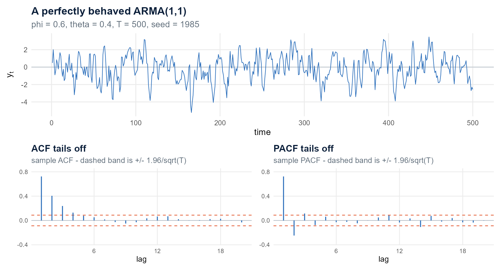
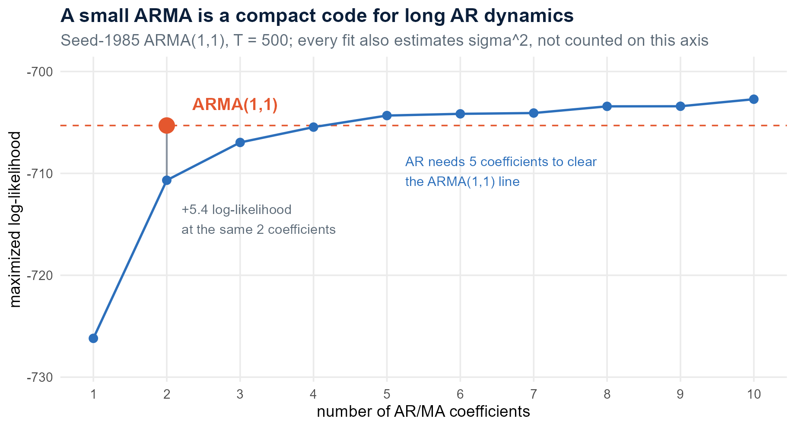
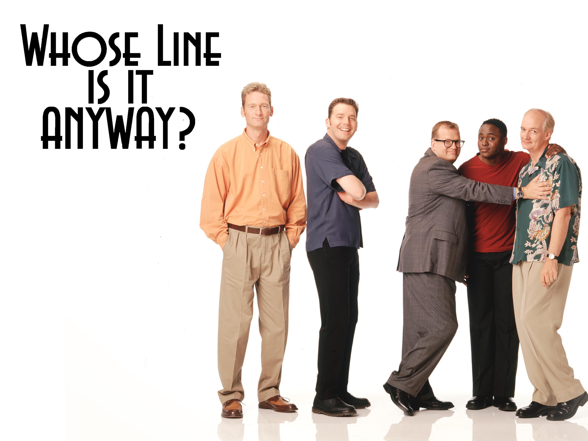
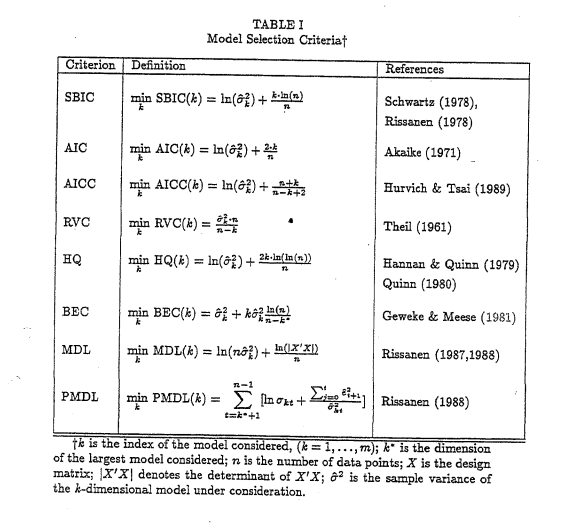
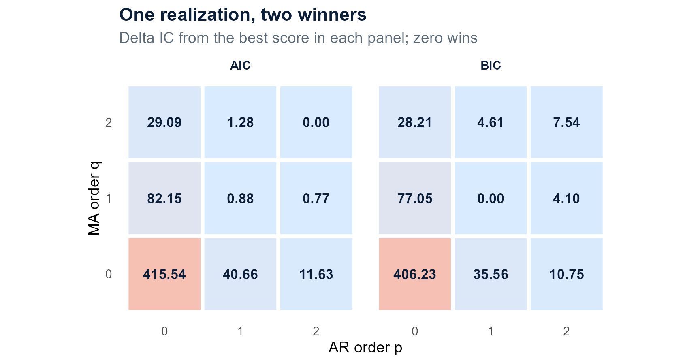
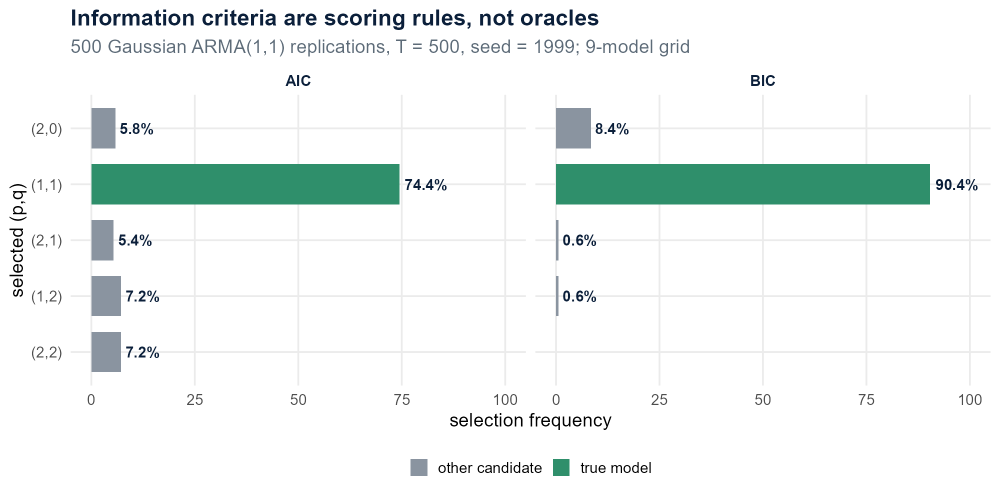
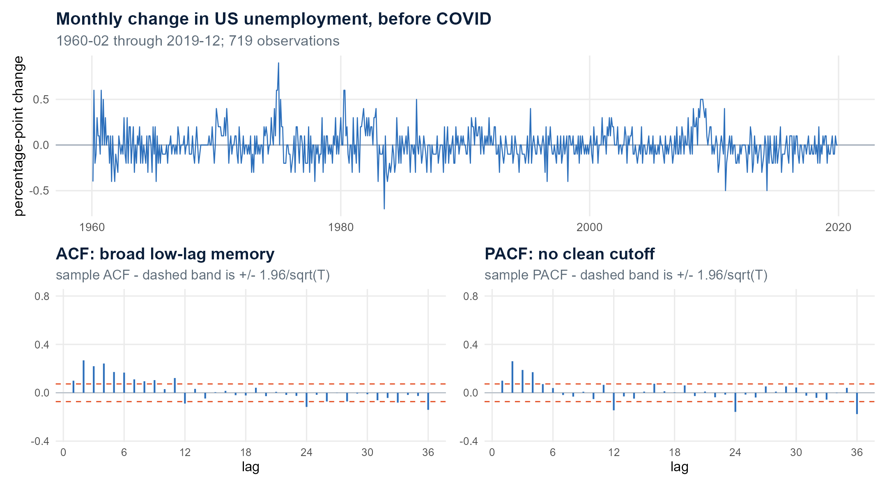
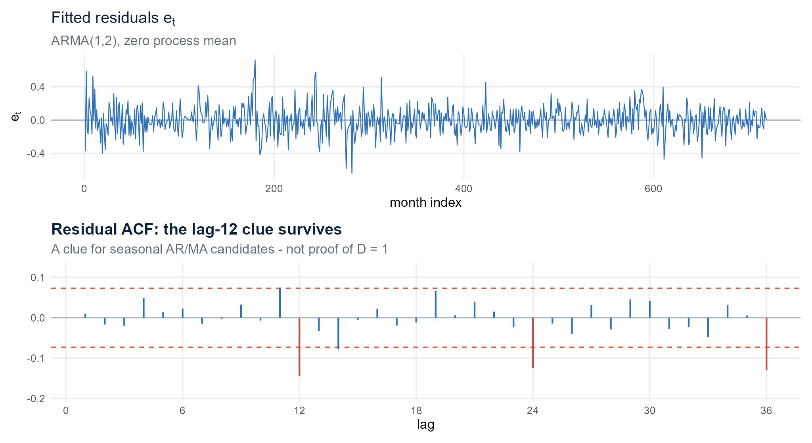

Choosing and Fitting an ARMA Model
Module 4 · Model selection and maximum likelihood
Gary Cornwall
Econ 6376 · The George Washington University
Module 4
Last week’s fingerprint table has one unresolved row
| Process | ACF | PACF | What the print identifies |
|---|---|---|---|
| AR() | tails off | cuts off at | the order |
| MA() | cuts off at | tails off | the order |
| ARMA() | tails off | tails off | the class, not the orders |
For a pure AR or MA, one fingerprint ends sharply. For an ARMA, neither does.
Module 3 can name the class. It cannot name the orders.
A known ARMA(1,1) still refuses to identify itself

The DGP is ours: , , . Yet both sample fingerprints tail off. Nothing in the print announces .
Deduction got us this far. It cannot get us further.
Modules 2 and 3 ran on deduction: eliminate the impossible, and whatever remains is the truth. That worked because the answer was in the room. A series is stationary or it is not. A PACF cuts off at lag 2 or it does not.
Module 4 is where that stops.
- AIC does not assume the true model is in your candidate set.
- It ranks approximations by how wrong each one is expected to be.
- There may be no true model here — only designs that meet spec at different cost.
This is Sherlock Holmes’s last appearance in the course. From here on the question is not which one is right but which one meets spec, and at what price.

Sidney Paget’s Holmes, signed and dated 1904.
Why the model is not unique
The unresolved row has a name: isomorphism
A stationary AR() is an MA(). An invertible MA() is an AR().
Both representations are effectively infinite-order, so neither correlogram has a finite lag at which it must go to zero. That is why the ARMA row tails off twice.
Module 3 §3.3.6 promised this would come due. The correlogram trap is the symptom; isomorphism is the cause.
Compression is the point, not the bug
If a small finite ARMA can stand in for infinite-order dynamics, then the ARMA is a compact code for a process that would otherwise need infinitely many weights.
That is dimensionality reduction, and it is the whole reason we use these models.
Silicon Valley is about a compression algorithm, and its running joke is the Weissman score — one made-up number for ranking compression algorithms on a fit-versus-cost tradeoff. We are about to need exactly that.
Silicon Valley, HBO, 2014–2019.
Two coefficients buy what five AR lags buy

The criteria later today also count , which adds one to every candidate alike and leaves the comparison intact.
At the same 2 coefficients, the ARMA(1,1) beats the AR(2) by 5.37 log-likelihood.
The AR ladder closes in slowly: still 1.66 behind at 3 coefficients, 0.16 behind at 4, and only at 5 does it clear the line at all.
And it never stops paying out. AR(10) — five times the coefficients — buys only 2.58 more than the two-coefficient ARMA. Every AR() is nested inside AR(), so the maximized likelihood can only go up — never down, however many lags you add.
Likelihood alone can never tell you to stop. We need a price per parameter.
What an unpriced model looks like: keep adding until everything connects.
Model selection is a general problem
Step outside time series for a moment
How do you choose between these two?
No lags. No correlograms. No stationarity. Cross-sectional index , not .
You must have a principled way of choosing a model.
This is not a time series problem. Time series just makes it unavoidable.
Why cannot rank
Add a regressor and the residual sum of squares can only fall or stay flat. So weakly increases with every parameter you add, whatever that parameter is.
A number that goes up no matter what carries no information about whether the parameter earned its place.
is a descriptive statistic. It is not a selection rule.

Whose Line Is It Anyway? — everything’s made up and the points don’t matter.
Adjusted : a correction, not a criterion
observations, estimated coefficients — intercept included.
Mills and Prasad put eight selection criteria on one page. Almost all of them reach a score by adding a penalty to a measure of fit. Adjusted is the exception — it appears as Theil’s RVC, and it multiplies:
- Its penalty is the loosest of the classical criteria, and it over-selects most aggressively: in their Table XV, 48 of 100 replications land above the true order, against AIC’s 27.
- The inflation factor was reverse-engineered from a degrees-of-freedom correction, not derived from any risk objective — so it inherits neither AIC’s efficiency nor BIC’s consistency.
Friends don’t let friends use adjusted .

Mills & Prasad (1992), Table I.
The log-likelihood, in the case you already know
Gaussian linear regression, observations:
You already have , in closed form, with no time series machinery at all. Everything that follows is a choice of what to add to it.
The family: likelihood + penalty
Every criterion in Core has the same two pieces
The first term rewards a model that puts density at the fixed data. The second charges for how much flexibility it took to do that.
- is the deviance: bigger log-likelihood, smaller deviance, better fit.
- The penalty stops the arms race. Without it, the biggest candidate always wins.
- Smaller is better — and only among fits on the same data under the same likelihood convention.
There are many ways to choose a model. They mostly follow one pattern.
The family has many members and one shape
Classical plug-in likelihood criteria keep the same score shape:
At , the per-parameter prices are AIC , HQIC , and BIC . HQIC sits between the two and reappears in VAR lag selection.
DIC and WAIC are different objects. They use posterior summaries and an effective complexity; they are not obtained by swapping another fixed- penalty into the formula above.
Reconciling the two written forms. Mills and Prasad’s Table I writes every criterion as ; their is our sample size — cross-sectionally, in time series. For a Gaussian likelihood evaluated at the MLE , — a positive multiple of their score plus a constant shared by every candidate. The two forms rank identically.
We use AIC, AICc, and BIC in this course.
AIC charges a flat two units per parameter
In every information criterion on these slides, counts every estimated parameter, including and any process mean — the regression coefficient count from the adjusted digression, plus . is the common estimation sample. “Smaller is better” compares only fits on the same data under the same likelihood convention.
AIC asks which candidate is expected to be the least-wrong approximation in a Kullback–Leibler risk sense. Its penalty does not grow with .
Consequences:
- It is willing to keep terms that buy modest likelihood improvements.
- Under suitable conditions, its asymptotic target is predictive efficiency.
- In finite samples it often selects a model larger than the generating model.
BIC raises the price as the sample grows
For , , so BIC penalizes each added parameter more than AIC.
Consequences:
- It discards weakly supported terms more aggressively.
- If the true finite-dimensional model is in the candidate set and regularity conditions hold, its selected order is consistent.
- Its motivating story is a Bayesian approximation to marginal likelihood.
Enders calls the same criterion SBC.
AICc adds a short-sample surcharge
The correction vanishes as grows. It becomes sharp when the sample is short relative to the number of fitted parameters—and is undefined when .
Course rule of thumb: prefer AICc to AIC when .
forecast::auto.arima() uses AICc by default.
Change the sample and watch the prices separate
Try , , , and . Then bring down toward to see why AICc refuses casual complexity in a short series.
The modeling goal chooses the primary score
Explanation / parsimony
Use BIC as the primary criterion when the scientific job is a compact structural description and the candidate set plausibly contains the true sparse model.
Ask: Which terms earn their place?
Prediction / forecasting
Use AIC or AICc as the primary criterion when the job is predictive approximation and modest extra flexibility can reduce future loss.
Ask: Which candidate is least wrong for prediction?
Choose before fitting. Block 4 will test the prediction claim on held-out data.
Choosing the primary criterion after seeing the winners reverses the logic.
Agreement strengthens the shortlist; disagreement reveals its price sensitivity
| Scorecard | Interpretation | Next move |
|---|---|---|
| AIC, AICc, and BIC agree | winner survives several penalty prices | inspect diagnostics |
| AIC/AICc choose larger than BIC | extra dynamics clear the light price only | ask whether goal is prediction or parsimony |
| top models are within about 2 points | ranking is weak, not decisive | keep both through diagnostics |
The professional default is to report all three. The disciplined choice is to declare which one answers the primary question.
Getting when the model is not a regression
You have for a regression. An ARMA is not one.
The closed forms two sections ago needed one thing: every regressor on the right-hand side is observed. Stack them into , invert , done.
- The AR block is fine — lagged ’s are data.
- The MA block is not. is an innovation, and you never see it.
- And for the whole vector has to account for the fact that the observations are dependent, so it does not factor into independent pieces for free.
The fix: define the likelihood carefully, then let a numerical optimizer walk the parameter space.
Likelihood freezes the data and moves the parameters
You observed one vector, . Hold it fixed.
Now walk through possible parameter vectors and evaluate
The data do not move. The model-implied joint density at those data moves. General ARMA has no convenient closed-form maximizer, so software searches numerically.
Which parameter values place the most density at the data already observed?
A likelihood is not the probability of an exact continuous sample
For continuous data,
for every exact vector . The likelihood is the joint density evaluated at the fixed observed data, viewed as a function of .
- A density value can exceed one.
- Its absolute level is not a probability statement about the parameter.
- Comparisons across parameter values are the point.
Probability varies the data under fixed parameters. Likelihood varies the parameters under fixed data.
For a pure AR, the conditional objective is least squares
For zero-mean AR(), conditional on the first observations,
The one-step prediction uses only observed lagged ’s, so under Gaussian innovations:
That is the familiar OLS criterion. Conditional AR fitting is OLS-like.
Walk the AR coefficient across its conditional likelihood
Move away from the OLS/CSS estimate. The residual sum of squares rises and the conditional log-likelihood falls—the same objective viewed from opposite directions.
The bridge is exact enough to see—and limited enough to name
0.557331331
CSS AR(1)
0.557331336
no-intercept OLS
0.556945001
default CSS–ML
The CSS and OLS coefficients agree to the displayed precision relevant for interpretation. The default fit performs a numerical ML polish and moves slightly.
Say “OLS-like for conditional pure AR”—not “MLE is always OLS.”
MA terms make yesterday’s errors part of today’s state
For ARMA(1,1),
is observed. is not.
In Memento, the protagonist cannot form new memories, so he reconstructs his own past from photographs, notes, and tattoos. is a photograph — you can look at it. is a memory you do not have and must rebuild from what you wrote down.
The optimizer reconstructs the past innovations recursively for every proposed . That recursion makes the objective nonlinear in the parameters and removes the ordinary-regression shortcut.
This is why an ARMA needs a different estimator than OLS.

Memento, dir. Christopher Nolan, 2000.
What did he assume before the first note?
The recursion has to start somewhere. Different starting conventions are different estimators.
| Treatment of the beginning | Classroom label | |
|---|---|---|
| Exact / unconditional ML | models the full joint density, including the initial state | method = "ML" |
| Conditional / CSS | conditions on starting observations or initializes earlier innovations | method = "CSS" |
| Default CSS–ML | CSS supplies starting values; numerical ML finishes | method = "CSS-ML" |
There is no universal sample size at which the answers must agree to a fixed number of decimals. Persistence, boundary proximity, initial conditions, and the realized sample all matter.
Two points are enough to demystify a log-likelihood
Take , , and .
For :
For , the conditional mean is and the log density is — slightly higher. Walk the parameter, watch the log density move, keep the top.
The log likelihood in a fitted object is the many-observation version of this arithmetic.
One fit object carries estimates, uncertainty, and fit
ARIMA(1,0,1) with zero mean
ar1 ma1
0.5398 0.4265
s.e. 0.0501 0.0574
sigma^2 = 0.9855: log likelihood = -705.3
AIC = 1416.61 AICc = 1416.65 BIC = 1429.25names the DGP innovation. Extracted fitted residuals are .
R’s printed “intercept” is the process mean
For an undifferenced stationary ARMA, R writes
Expanding gives the recursive intercept in our master equation:
So report R’s printed intercept as . Convert it before writing the recursion. For a zero-mean DGP or policy, set include.mean = FALSE explicitly.
Where this sits in Box–Jenkins
The four-step workflow, and where this course sits
| Box–Jenkins step | What it produces | Course location | After today |
|---|---|---|---|
| 1. Identification | candidate orders | Module 2 (); Module 3 () | available |
| 2. Estimation | , standard errors, | Module 4: MLE | available |
| IC scoring (between 2 and 3) | a ranking under a declared goal | Module 4: AIC, AICc, BIC | available |
| 3. Diagnostic checking | residual ACF/PACF, Ljung–Box, fitted roots | Module 5 | preview only |
| 4. Forecasting | forecast distributions, out-of-sample loss | Block 4 | not yet |
Two boundaries worth stating out loud:
- Scoring lives after estimation — an unfitted order has no log-likelihood to score.
- A lowest score is a ranking, not a passed diagnostic. Module 5 can overturn it.
The mixing board is now a fitting problem
By Module 3, every non-seasonal term was available. Module 4 does not add a new slider. It asks:
- Which sliders belong in the candidate?
- Where should the selected sliders be set?
- How much evidence supports that setting?
The seasonal block remains off until Module 5.
Apply it
Three R functions have three different jobs
| Function | Use it for | What to remember |
|---|---|---|
stats::arima() |
minimal base-R fit | reports AIC directly; generic BIC() is still available |
forecast::Arima() |
course default manual candidate fit | AIC, AICc, BIC in one object |
forecast::auto.arima() |
automated search | AICc by default; search path and constraints matter |
# Six pre-COVID UNRATE candidates, foreshadowing the real-data case
candidates <- list("(1,0,0)"=c(1,0,0), "(0,0,1)"=c(0,0,1), "(1,0,1)"=c(1,0,1),
"(2,0,1)"=c(2,0,1), "(1,0,2)"=c(1,0,2), "(2,0,2)"=c(2,0,2))
fits <- lapply(candidates, function(ord)
forecast::Arima(d_unrate, order = ord, include.mean = FALSE))
score <- data.frame(model = names(fits),
AIC = sapply(fits, AIC),
AICc = sapply(fits, function(f) f$aicc),
BIC = sapply(fits, BIC))Hold the mean policy and estimation sample fixed across candidates.
Automation is a very good intern—not a conscience
fit_auto <- forecast::auto.arima(
y_arma, ic = "aicc", stepwise = TRUE,
approximation = FALSE, d = 0,
seasonal = FALSE, allowmean = FALSE,
allowdrift = FALSE
)Seed 1985, , zero process mean:
automatic ARMA(2,2)AICc 1415.84
true ARMA(1,1)AICc 1416.65
Trust the first pass when the series is long and clean and a low-order ARMA is plausible.
Override—or at least challenge—it when roots hug one, the chosen order is large for , residuals fail, or domain structure is missing.
Suits, USA Network, 2011–2019.
Brilliant associate, encyclopedic recall, finds the answer before you finish the question — and still needs someone with judgment to sign off.
If you override it, can you say exactly why?
One realization gives two different winners

Seed 1985, zero process mean, nine candidates:
- AIC and AICc: ARMA(2,2)
- BIC: the true ARMA(1,1), by more than four BIC points
One print cannot tell us whether AIC’s miss is a fluke or a tendency.
The laboratory gives IC every advantage
We now know the truth and put it in the grid:
500
replications
500
observations each
9
candidates each
Same zero-mean policy. Same grid. Sequential seed 1999. If IC is an oracle, the true should win every time.
Even laboratory evidence needs screening and humility

True , AIC74.4%
True , BIC90.4%
Rejected fits72 / 4,500
All-failed reps0
- Neither criterion is certain.
- AIC’s misses lean larger — they concentrate in bigger ARMA candidates.
- BIC’s main miss is AR(2), a same-dimension approximation to the ARMA dynamics.
- Disagreement is information.
The screen rejects null, non-finite, or non-converged fits before ranking.
Real data: pre-COVID UNRATE
Stop the estimation window before one month rewrites everything
We estimate on 1960-01 through 2019-12:
720
UNRATE levels
719
first differences
April 2020 moved from 4.4 to 14.8 in one month. That shock dominates the covariance scale and flattens the full-sample correlogram. Outlier and break treatment is outside today’s toolkit.
The honest design is to model the pre-COVID history and state the window.
The pre-COVID fingerprints say “low-order ARMA”—and stop there

Both prints tail off. The early correlation spans several lags; there is no clean AR or MA cutoff. This is the correlogram trap on real data.
Seasonal bumps are a signal, not proof—and not evidence for
The ACF and PACF show modest structure near lags 12 and 24. That supports adding seasonal AR or MA candidates to a later list.
UNRATE is already seasonally adjusted, so call this residual annual-lag dependence, not raw calendar seasonality. It does not establish a seasonal unit root.
Today we knowingly fit a non-seasonal ARMA as a pedagogical working model. Module 5 separates seasonal dynamics from seasonal differencing and asks for unit-root evidence before .
Write the six candidates—and the mean policy—before scoring
Candidate orders:
Mean policy:
That is a deliberate modeling restriction: no permanent deterministic monthly drift over this window. Every candidate uses include.mean = FALSE; the comparable automatic search uses allowmean = FALSE.
Change the policy only by refitting every candidate under the alternative.
Change the criterion; watch what the gaps do
Each bar is the gap to the best candidate under the selected criterion, so the winner sits at zero. Toggle AIC, AICc, and BIC and watch ARMA(2,2) cross the 2-point line.
All three criteria select ARMA(1,2)
| Candidate | AIC | AICc | BIC |
|---|---|---|---|
| ARMA(1,2) | −549.333 | −549.277 | −531.021 |
| ARMA(2,2) | −548.851 | −548.767 | −525.962 |
| ARMA(2,1) | −545.203 | −545.147 | −526.891 |
ARMA(2,2) trails by only 0.48 AIC points but by 5.06 BIC points. The extra AR lag nearly clears AIC’s light price and clearly fails BIC’s heavier one.
The comparable non-seasonal auto.arima() search under the same zero-mean restriction also selects ARMA(1,2). Agreement names a working model. It does not finish the job.
The working fit is plausible—and explicitly provisional
code 0
optimizer converged
1.158
smallest AR-root modulus
2.077
smallest MA-root modulus
Both fitted lag-polynomial root moduli exceed one, so the AR side is stationary and the MA side is invertible. Before forecasting, the residuals must still behave like the innovations the model claims to have isolated.
The residuals leave Module 5 a seasonal signal

−0.145
−0.125
−0.130
95% band±0.073
The low lags are quieter. The lag-12, lag-24, and lag-36 negatives survive.
Supports: adding seasonal AR/MA candidates.
Does not support: taking a seasonal difference.
Key takeaways
- You must have a principled way of choosing a model. Isomorphism means the representation is not unique, so “read it off the correlogram” is not a rule.
- There are many criteria, and they mostly follow one pattern: likelihood plus a penalty, .
- Adjusted is a correction, not a criterion. Loosest penalty, most aggressive over-selection, no risk objective behind it — don’t rank ARMA candidates with it when AIC/AICc/BIC and diagnostics are on the table.
- AIC and BIC are the common two, and they have different strengths. AIC/AICc for prediction, BIC for parsimony — declared before fitting.
You can also now fit ARMA candidates by maximum likelihood, explain the pure-AR CSS–OLS bridge, hold the sample and mean policy fixed across a candidate set, and read every field in a forecast::Arima() printout.
Next time: check the residuals
12
annual lag
24
it repeats
36
still outside
- Read the residual ACF and PACF, not the raw-series fingerprints.
- Use Ljung–Box to test residual autocorrelations jointly.
- Compare seasonal AR/MA terms with the much stronger commitment of .
- Revisit the UNRATE spikes at lags 12, 24, and 36 before forecasting.
Module 4 hands Module 5 a fitted model—not a validated one.
Interactive lab machinery
This uncounted support slide keeps the three labs available in the document. Use the RevealJS menu to return to a lab if a browser reload interrupts an interaction.
m4k = (function () {
const NS = "http://www.w3.org/2000/svg";
function el(tag, cls, text) {
const node = document.createElement(tag);
if (cls) node.className = cls;
if (text != null) node.textContent = text;
return node;
}
function svg(w, h) {
const node = document.createElementNS(NS, "svg");
node.setAttribute("width", String(w));
node.setAttribute("height", String(h));
node.setAttribute("viewBox", `0 0 ${w} ${h}`);
node.setAttribute("role", "img");
return node;
}
function sEl(tag, attrs, text) {
const node = document.createElementNS(NS, tag);
Object.entries(attrs || {}).forEach(([key, value]) => node.setAttribute(key, String(value)));
if (text != null) node.textContent = text;
return node;
}
function button(label, action) {
const node = el("button", "btn", label);
node.type = "button";
if (action) node.dataset.action = action;
return node;
}
function fmt(x, digits) {
return Number(x).toFixed(digits == null ? 2 : digits).replace("-0.00", "0.00");
}
function clear(node) { while (node.firstChild) node.removeChild(node.firstChild); }
return { NS, el, svg, sEl, button, fmt, clear };
})()makeLikelihood = function (opts) {
opts = opts || {};
const d = likelihoodBridge[0];
const phiOLS = Number(d.phi_ols), phiCSS = Number(d.phi_css), phiML = Number(d.phi_ml);
const n = Number(d.n_cond), sxx = Number(d.sxx), sseMin = Number(d.sse_min);
const lo = 0.35, hi = 0.76, yLo = -12, yHi = 0;
let phi = opts.phi0 == null ? 0.45 : Number(opts.phi0);
const root = m4k.el("div", "widget card"); root.dataset.widget = "likelihood";
const bar = m4k.el("div", "wbar");
const ctl = m4k.el("label", "ctl"); ctl.append("phi ");
const slider = document.createElement("input"); slider.type = "range";
slider.min = lo; slider.max = hi; slider.step = 0.000001; slider.value = phi;
slider.dataset.action = "phi";
const val = m4k.el("span", "cval"); ctl.append(slider, val); bar.appendChild(ctl);
const jumpOLS = m4k.button("CSS / OLS peak", "peak");
const jumpML = m4k.button("Default ML", "ml");
const reset = m4k.button("Reset", "reset"); reset.classList.add("ghost");
bar.append(jumpOLS, jumpML, reset); root.appendChild(bar);
const chart = m4k.svg(1120, 390);
chart.setAttribute("aria-label", "Conditional AR1 likelihood as phi changes");
const readout = m4k.el("div", "readout"); root.append(chart, readout);
const L = 92, R = 30, T = 28, B = 64, W = 1120 - L - R, H = 390 - T - B;
const x = p => L + W * (p - lo) / (hi - lo);
const y = ll => T + H * (yHi - ll) / (yHi - yLo);
const llRel = p => -0.5 * n * Math.log((sseMin + sxx * (p - phiOLS) ** 2) / sseMin);
function render() {
phi = Number(slider.value); val.textContent = phi.toFixed(3); m4k.clear(chart);
[0, -3, -6, -9, -12].forEach(tick => {
chart.appendChild(m4k.sEl("line", {x1:L, y1:y(tick), x2:L+W, y2:y(tick), stroke:"#e7ecf1", "stroke-width":1}));
chart.appendChild(m4k.sEl("text", {x:L-14, y:y(tick)+7, "text-anchor":"end", "font-size":20, fill:"#5d6b78"}, String(tick)));
});
[0.4, 0.5, 0.6, 0.7].forEach(tick => {
chart.appendChild(m4k.sEl("text", {x:x(tick), y:T+H+35, "text-anchor":"middle", "font-size":20, fill:"#5d6b78"}, tick.toFixed(1)));
});
let path = "";
for (let i = 0; i <= 180; i++) {
const p = lo + (hi - lo) * i / 180, yy = Math.max(yLo, llRel(p));
path += `${i ? "L" : "M"}${x(p).toFixed(2)},${y(yy).toFixed(2)} `;
}
chart.appendChild(m4k.sEl("path", {d:path, fill:"none", stroke:"#2c6fbb", "stroke-width":6, "stroke-linecap":"round"}));
[[phiOLS,"#2f8f6b","CSS / OLS"],[phiML,"#e4572e","default ML"]].forEach(([p,c,label]) => {
chart.appendChild(m4k.sEl("line", {x1:x(p), y1:T, x2:x(p), y2:T+H, stroke:c, "stroke-width":3, "stroke-dasharray":"8 7"}));
chart.appendChild(m4k.sEl("text", {x:x(p)+(c==="#2f8f6b"?-10:10), y:T+22,
"text-anchor":c==="#2f8f6b"?"end":"start", "font-size":19, fill:c, "font-weight":700}, label));
});
const ll = llRel(phi), sse = sseMin + sxx * (phi - phiOLS) ** 2;
chart.appendChild(m4k.sEl("circle", {cx:x(phi), cy:y(Math.max(yLo,ll)), r:11, fill:"#0b1f3a", stroke:"white", "stroke-width":4}));
chart.appendChild(m4k.sEl("text", {x:L+W/2, y:382, "text-anchor":"middle", "font-size":22, fill:"#16202b"}, "candidate phi"));
readout.innerHTML = `<b>phi = ${phi.toFixed(6)}</b> · conditional SSE = ${sse.toFixed(3)} · relative log-likelihood = ${ll.toFixed(3)}.<br>` +
`CSS = ${phiCSS.toFixed(9)}; OLS = ${phiOLS.toFixed(9)}; default CSS-ML = ${phiML.toFixed(9)}.`;
}
slider.addEventListener("input", render);
jumpOLS.addEventListener("click", () => { slider.value = phiOLS; render(); });
jumpML.addEventListener("click", () => { slider.value = phiML; render(); });
reset.addEventListener("click", () => { slider.value = opts.phi0 == null ? 0.45 : opts.phi0; render(); });
render(); return root;
}makePenalty = function (opts) {
opts = opts || {};
let sample = opts.T0 == null ? 200 : Number(opts.T0);
let k = opts.k0 == null ? 5 : Number(opts.k0);
const root = m4k.el("div", "widget card"); root.dataset.widget = "penalty";
const bar = m4k.el("div", "wbar");
function rangeCtl(label, min, max, step, value, action) {
const ctl = m4k.el("label", "ctl"); ctl.append(`${label} `);
const input = document.createElement("input"); input.type = "range";
input.min=min; input.max=max; input.step=step; input.value=value; input.dataset.action=action;
const out = m4k.el("span", "cval"); ctl.append(input,out); bar.appendChild(ctl);
return {input,out};
}
const tCtl = rangeCtl("T", 10, 1000, 1, sample, "T");
const kCtl = rangeCtl("k", 1, 12, 1, k, "k");
bar.appendChild(m4k.el("div", "sep"));
[[10,"T = 10"],[40,"T = 40"],[200,"T = 200"],[720,"T = 720"]].forEach(([v,label]) => {
const b=m4k.button(label,`T-${v}`); b.addEventListener("click",()=>{tCtl.input.value=v; render();}); bar.appendChild(b);
});
const reset=m4k.button("Reset","reset"); reset.classList.add("ghost"); bar.appendChild(reset);
root.appendChild(bar);
const chart=m4k.svg(1100,350); chart.setAttribute("aria-label","AIC BIC and AICc total penalty comparison");
const readout=m4k.el("div","readout"); root.append(chart,readout);
const colors={AIC:"#2c6fbb",BIC:"#e4572e",AICc:"#2f8f6b"};
function render(){
sample=Number(tCtl.input.value); k=Number(kCtl.input.value);
tCtl.out.textContent=String(sample); kCtl.out.textContent=String(k); m4k.clear(chart);
const den=sample-k-1;
const values=[{name:"AIC",v:2*k},{name:"BIC",v:k*Math.log(sample)},
{name:"AICc",v:den>0?2*k+2*k*(k+1)/den:Infinity}];
const finite=values.filter(d=>Number.isFinite(d.v)).map(d=>d.v);
const max=Math.max(12,...finite)*1.14, left=180, width=850;
values.forEach((d,i)=>{
const yy=58+i*92;
chart.appendChild(m4k.sEl("text",{x:left-24,y:yy+11,"text-anchor":"end","font-size":25,fill:colors[d.name],"font-weight":700},d.name));
chart.appendChild(m4k.sEl("rect",{x:left,y:yy-22,width:width,height:42,rx:8,fill:"#eef2f6"}));
if(Number.isFinite(d.v)){
chart.appendChild(m4k.sEl("rect",{x:left,y:yy-22,width:width*d.v/max,height:42,rx:8,fill:colors[d.name]}));
chart.appendChild(m4k.sEl("text",{x:left+width*d.v/max+14,y:yy+9,"font-size":23,fill:"#16202b","font-weight":700},d.v.toFixed(2)));
} else {
chart.appendChild(m4k.sEl("rect",{x:left,y:yy-22,width:width,height:42,rx:8,fill:"#c14741"}));
chart.appendChild(m4k.sEl("text",{x:left+width/2,y:yy+9,"text-anchor":"middle","font-size":22,fill:"white","font-weight":700},"undefined: T <= k + 1"));
}
});
const aicc=values[2].v;
readout.innerHTML=`At <b>T = ${sample}</b> and <b>k = ${k}</b>: AIC charges ${(2*k).toFixed(2)}, BIC charges ${(k*Math.log(sample)).toFixed(2)}, `+
`and AICc charges ${Number.isFinite(aicc)?aicc.toFixed(2):"no finite penalty"}. `+
`BIC's price per parameter is log(T) = ${Math.log(sample).toFixed(2)}.`;
}
tCtl.input.addEventListener("input",render); kCtl.input.addEventListener("input",render);
reset.addEventListener("click",()=>{tCtl.input.value=opts.T0==null?200:opts.T0;kCtl.input.value=opts.k0==null?5:opts.k0;render();});
render(); return root;
}makeUnrate = function (opts) {
opts=opts||{}; let criterion=opts.criterion0||"AIC", selected="ARMA(2,2)";
const root=m4k.el("div","widget card"); root.dataset.widget="unrate";
const bar=m4k.el("div","wbar"), buttons={};
["AIC","AICc","BIC"].forEach(c=>{const b=m4k.button(c,c.toLowerCase());buttons[c]=b;bar.appendChild(b);});
const reset=m4k.button("Reset","reset");reset.classList.add("ghost");bar.appendChild(reset);root.appendChild(bar);
const chart=m4k.svg(1120,390);chart.setAttribute("aria-label","UNRATE candidate gaps to the best score");
const readout=m4k.el("div","readout");root.append(chart,readout);
const models=["ARMA(1,0)","ARMA(0,1)","ARMA(1,1)","ARMA(2,1)","ARMA(1,2)","ARMA(2,2)"];
function render(){
Object.entries(buttons).forEach(([c,b])=>b.classList.toggle("on",c===criterion));m4k.clear(chart);
const left=190,width=800,top=36,rowH=55,cap=10,xOf=g=>left+width*Math.min(g,cap)/cap;
// 2-point reference line: a conventional interpretive aid, not a theorem.
chart.appendChild(m4k.sEl("line",{x1:xOf(2),y1:top+2,x2:xOf(2),y2:top+models.length*rowH-14,
stroke:"#8a94a0","stroke-width":3,"stroke-dasharray":"9 8"}));
chart.appendChild(m4k.sEl("text",{x:xOf(2),y:top-12,"text-anchor":"middle","font-size":19,fill:"#5d6b78"},"gap = 2"));
models.forEach((model,i)=>{
const d=unrateIC.find(r=>r.model===model),gap=Number(d[`delta_${criterion}`]),score=Number(d[criterion]);
const yy=top+i*rowH,w=width*Math.min(gap,cap)/cap,win=gap<1e-8,sel=model===selected;
const near=!win&&gap<2;
const g=m4k.sEl("g",{"data-model":model,tabindex:0,role:"button","aria-label":`${model} ${criterion} gap ${gap.toFixed(2)}`});
g.style.cursor="pointer";
g.appendChild(m4k.sEl("text",{x:left-18,y:yy+29,"text-anchor":"end","font-size":21,fill:win?"#2f8f6b":"#5d6b78","font-weight":win?700:500},model));
g.appendChild(m4k.sEl("rect",{x:left,y:yy,width,height:34,rx:7,fill:sel?"#d8ebff":"#eef2f6",stroke:sel?"#2c6fbb":"none","stroke-width":2}));
g.appendChild(m4k.sEl("rect",{x:left,y:yy,width:win?8:Math.max(8,w),height:34,rx:7,
fill:win?"#2f8f6b":near?"#e4572e":"#2c6fbb"}));
const capped=gap>cap;
g.appendChild(m4k.sEl("text",{
x:capped?left+width-14:left+Math.min(width,Math.max(8,w))+12,
y:yy+26,"text-anchor":capped?"end":"start","font-size":20,
fill:capped?"white":"#16202b","font-weight":win?700:500
},win?"best · gap 0.00":capped?`gap ${gap.toFixed(2)}`:`gap ${gap.toFixed(2)}`));
const choose=()=>{selected=model;render();};g.addEventListener("click",choose);g.addEventListener("keydown",ev=>{if(ev.key==="Enter"||ev.key===" "){ev.preventDefault();choose();}});chart.appendChild(g);
});
chart.appendChild(m4k.sEl("text",{x:left+width/2,y:377,"text-anchor":"middle","font-size":19,fill:"#5d6b78"},"Gap to the best score, zoomed to 0-10; larger gaps cap at the right edge"));
const d=unrateIC.find(r=>r.model===selected),score=Number(d[criterion]),gap=Number(d[`delta_${criterion}`]);
const gAIC=Number(unrateIC.find(r=>r.model==="ARMA(2,2)").delta_AIC);
const gBIC=Number(unrateIC.find(r=>r.model==="ARMA(2,2)").delta_BIC);
readout.innerHTML=`Selected row: <b>${selected}</b> · ${criterion} = ${score.toFixed(3)} · <b>gap = ${gap.toFixed(2)}</b>. `+
`Same six fits, same data: ARMA(2,2) trails by <b>${gAIC.toFixed(2)}</b> under AIC and by <b>${gBIC.toFixed(2)}</b> under BIC. `+
`Only the price per parameter changed. The 2-point line is a conventional reading aid, not a theorem.`;
}
Object.entries(buttons).forEach(([c,b])=>b.addEventListener("click",()=>{criterion=c;render();}));
reset.addEventListener("click",()=>{criterion=opts.criterion0||"AIC";selected="ARMA(2,2)";render();});render();return root;
}